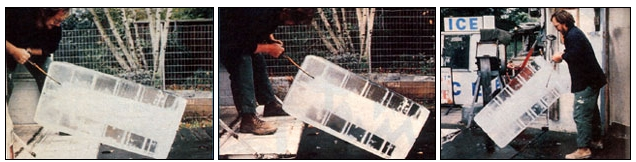

ABOVE, Left to right: Surprisingly enough, the process of setting a 300-pound, four-foot-high ""ice cube"" up on end or down on its side is relatively easy once you learn how... there's more skill involved than strength. BELOW, left to right: Our icehouse.. complete with bag vendor, crushing machine, loading platforms and hose for washing blocks; A flatbed truck with a hydraulic lift gate makes the job much easier; when upright, the slippery monoliths can be scooted into or out of the storeroom with very little effort.